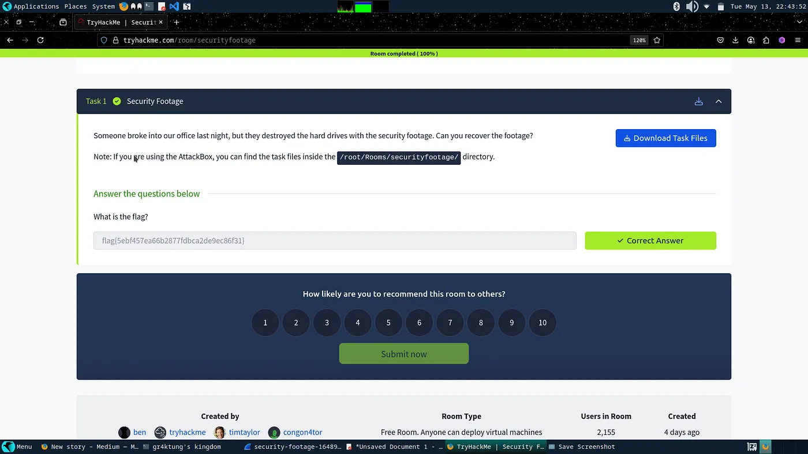
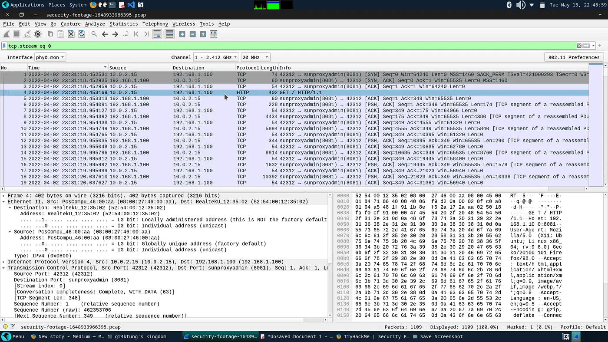
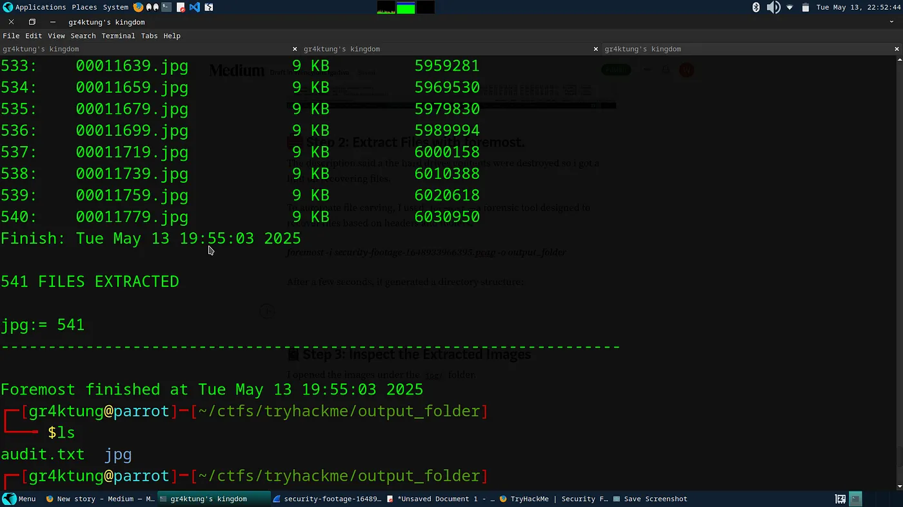
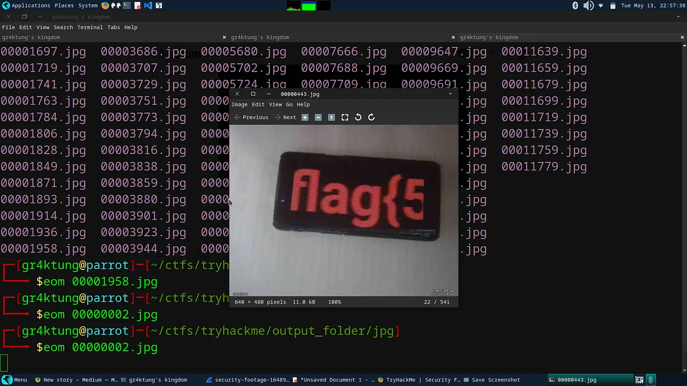

Security Footage: Tryhackme
I came across this challenge and since it was a new lab I decided to check it out. I found it quite interesting...
🧩 Challenge Description
Someone broke into our office last night, but they destroyed the hard drives with the security footage. Can you recover the footage?

🔍 Step 1: Inspect the PCAP File
Before jumping in, I opened the PCAP in Wireshark to take a peek. I noticed several TCP/HTTP streams and some large data transfers, possibly file transfers or media streams. I tried looking into the file and seeing if I could extract data manually, but it wasn't that straightforward!

🧰 Step 2: Extract Files with Foremost
The description mentioned that the hard drive contents were destroyed, which was a strong hint toward file carving. To automate this, I used foremost—a forensic tool designed to recover files based on headers and footers.
After a few seconds, it generated a directory structure containing the recovered data:

🖼 Step 3: Inspect the Extracted Images
I navigated into the generated output_folder and opened the images under the jpg/ directory.

Final step: Getting the flag
The flag text was distributed among the images. After viewing each one, I re-constructed the string to form the final flag. It was a classic "piece the puzzle together" forensics challenge!
Hope you learnt something from this post!